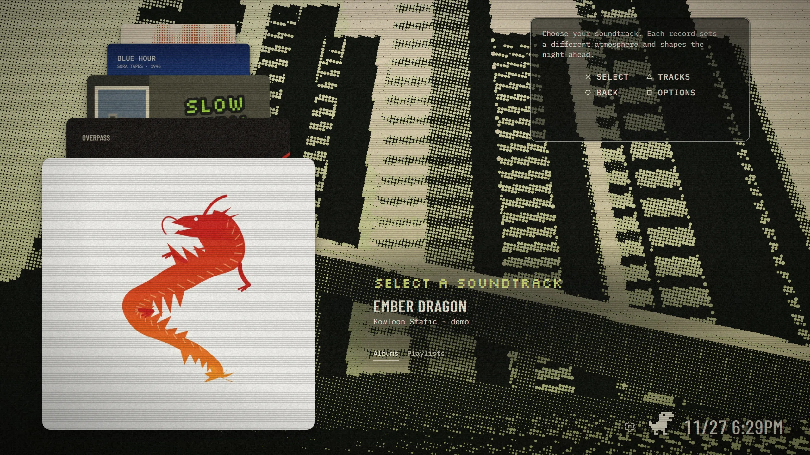
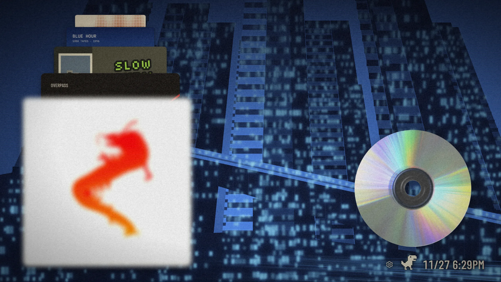
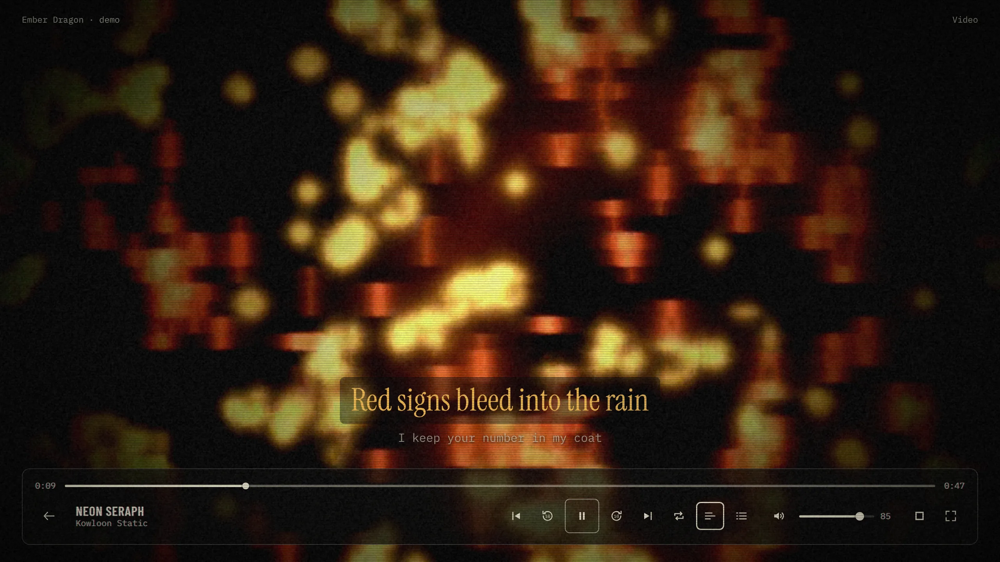
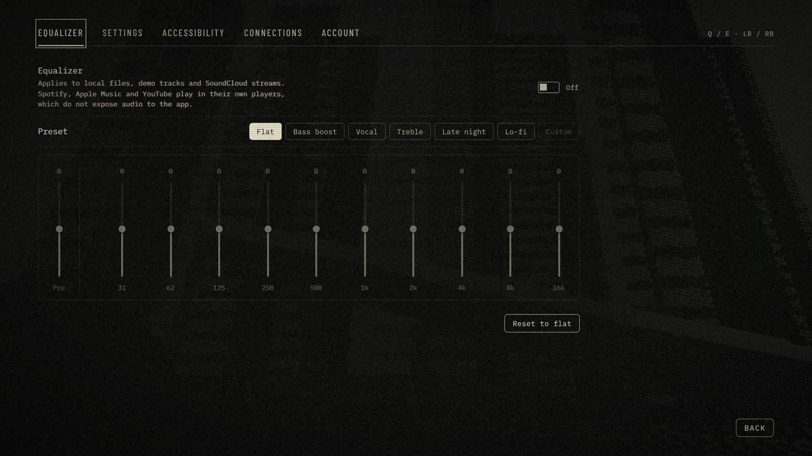

Library screen
Up and down move the sleeves; the city behind them never moves.

Your albums sit in a stack of sleeves; pick one and the disc slides out. Noctune finds your music, its synced lyrics and its official video, free on three systems.
Up and down move the sleeves; the city behind them never moves.

Press Enter and the disc slides from behind the cover, spinning.
The backdrop turns to night while the track loads underneath.

The video fills the screen and each lyric lights up on its beat.


Everything sits in one library. When one source can’t play a song, Noctune plays another copy of it and tells you which.
| Source | Plays | If it can’t play |
|---|---|---|
| Local files | Your Music folder, found on first launch, plus any MP3, FLAC, WAV, AAC, OGG or MP4 you add; files are never changed | A moved or damaged file is replaced by the same song from a connected service |
| Your saved albums and playlists with real covers, inside Noctune where the system supports it, otherwise on your Spotify app | Opens the Spotify app for you when no device is running, or plays your own copy of the song | |
| Your likes and playlists, through the equalizer | Preview-only and app-blocked tracks play from your files or Spotify instead | |
| Reads the Apple Music catalog with a MusicKit token | Songs play from your files, Spotify or SoundCloud | |
| Each song’s official video, found automatically, in YouTube’s own player | The song keeps playing with the visualizer, with a link to watch on YouTube |
Free and open source. Each build carries the demo albums, so it plays the moment it opens.
Service sign-in tokens live in your system keychain. On Linux that needs GNOME Keyring or KWallet running.